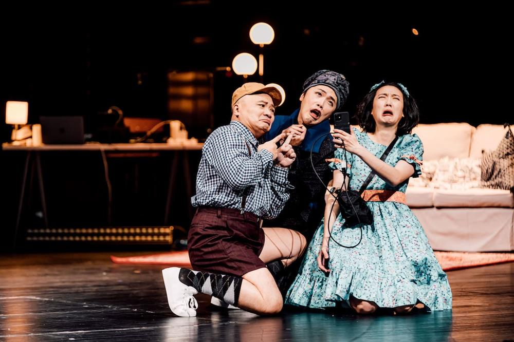

這個故事在「鬼島」上演。觀者見證 Richard 三世由歡樂的開場,到悲慘的死 亡,一齣由開國者所建構的前朝舊戲。劇場透過說書人 Richard 三世的獨白,帶來 重新詮釋那段過往的「混音」;同為海島的英國與台灣的眾聲,混雜紛呈於劇場。
Richard 三世沒有人肉形體,白手套、黑禮帽與拐杖,作為他存在的視覺證 據,甚或以虛無為形貌。作為構成 Richard 的部件,這些物體的意義僅在舞台上成 立。觀眾被告知這是 Richard 三世,然而未能看見莎翁劇作中醜惡的實像形貌;聽 聞他的聲吻,變異多端的神情卻隱於想像之中。無機物組織成鮮活的角色形象, 一如時常耳聞「一千個人眼中有一千個哈姆雷特」,虛空肉體後,觀眾對 Richard 的印象與解讀或許更加豐富。他奸滑、機智、狡詐、幽默,對於權位有堅若磐石 的偏執,劇場橫切出他性格中醜惡的剖面,偶然乍現的溫情,亦為後續的惡鋪 路。
劇中可見人類絕望的輪轉,殺戮歷史的重蹈覆轍。一連串名姓交織成歷史, 因於政治緣故,Hastings 的消亡被賦予冠冕堂皇的解釋,講歷史的人會停止呼吸, 新的悲劇又在子宮裡醞釀,孕育出一代又一代相似的人,依舊在王權、血緣與婚 姻間虯結難分,等待出演那些不曾排演卻異常相似的人生劇碼。
場景在舞台、戲劇院其他空間、虛擬空間中輪轉,透過舞台後幕投影出社群 媒體框中的直播,Richard 三世巧妙使他的登基成為順應民意的舉動,「這世上所 謂的真心,並不比我賣力的表演來得更有誠意。」呼應政客「表演」的目的在於 使觀眾買單,在向 Anne 求婚時如此,取悅大眾文化認定的價值時亦如此 Anne 的 生命很快落幕,為新的政治聯姻騰出空間,不過那位充氣娃娃飾演的公主,最終 讓戰勝者 Henry 七世娶回。劇場數次使用社群直播互動形式,以及透過預錄畫面 與實際演出巧妙切換,改變觀眾觀看的視角與模式。
“Word is World, Word is War.”似乎成王者便擁有絕對話語權,然而安在 Richard 三世身上的弒殺親姪罪名,非無可疑之處。人們以文字理解與詮釋世界,會說話 的卻不只文字。
在舞台燈光與形象特徵的轉換間,Richard 三世與 Henry 七世輪番獨白,他們 同有一個偉大目標——統一紅白玫瑰,成為英格蘭的王。成王敗寇,結局的懸殊 亦不能掩蓋最初目標的相同,如若這是 Henry 七世所編排的戲劇,為何他要與自 己的宿敵共享同一聲口?或許暗示企圖以嗜血暴力的作為醜化前朝君主的新登基 者,與他有些共性:皆心甘情願成為權位的俘虜。
誅殺 Henry 七世的強烈慾望使 Richard 三世道出「用我的王國換一匹馬」,或 許他最後尋得了馬,王國與因於存在所曾擁有的一切卻徹底丟失。史實中的 Richard 三世骨骸在數年前亦於停車場被挖掘而重見天日,他在劇中葬身於停車 場,回歸一無所有的子宮。
關於歷史,是否存在對於任何社會、價值觀、族群、性別皆然的真相?〈混 音理查三世〉向觀者敘說其中一個剖面。清潔婦所代表的普羅大眾,才是多數群 體,在這搖搖晃晃的動盪小島上,或許他們最在乎的是如何站穩腳步;被標記為 真相的歷史或客觀事實,毋寧說是想像的故事,為當權者服務。史家 Thomas L. Haskell 曾一針見血地道:「客觀性並不等於公正性。」根據尼采的視角主義觀 點,「客觀性」不過是合理的錯覺。因為人們在這些問題上有共同視角,得出一 致解釋,才造成如此錯覺。其實客觀事實會隨著共同視角的變化而變化。在劇場 內,觀者所體會的是 Henry 七世所建構的理查三世形象闡述的故事;在劇場外, 資訊繁雜的當代,閱聽人在自知與不自知下的所見所聞又受哪些意識形態影響? 輕易的信任使人們成為受擺佈的傀儡,習於將複雜的人性簡約劃分為好人、壞 人,是赤子的天真?成人的怠惰?抑或出於不甚關心的概括性理解?
團結需要敵人,和平需要仇恨,因於人性所生的情節輪迴般地一再上演。現 實中我們的過往不斷成為個人生命史,持續堆疊的年歲中發現更多被切開呈現的 人性剖面。往後思索歷史與人性的龐雜多變時,因於此劇再次深刻意識到自己於 「混音」中的所見所聞,或許都只是機緣偶然下的一道剖面。